Snakes of Canada
24 living snake species are recorded in Canada in SnakeList: 4 venomous and 20 non-venomous, from 2 families. 1 fossil species found here is listed separately and not counted.
- 24living species
- 2families
- 1fossil, not counted
Danger to people · tap a number to show only those snakes
- 0mildly venomous
- 0giant constrictors
Harmful = dangerously venomous + giant constrictors. Harmless = not venomous and not a giant constrictor. Mildly venomous snakes have no serious bites to people documented. Any snake can bite.
These totals count the unique living snake species SnakeList records in Canada; the 1 fossil species found here is listed separately and not counted. A species counts if it is recorded anywhere in the country, so not every snake lives in every part of it.
In SnakeList’s checklist filters
How many of the 24 living species here each filter in the SnakeList app picks out – tap a number to show only those snakes. The app’s own counts for Canada also include the 1 fossil species listed separately below.
Snake family3 types, 2 families
Type
Family
Habitats13 habitat groups
Habitats are estimated from where each snake is recorded and what kind of snake it is, as in the app; a snake can count in several.
Characteristics4 venomous, 3 constrictors
Constrictor and Non-constrictor count only snakes whose family or genus is documented as constricting or not; the rest are not documented.
Other filters7 popular, 0 rare
- 0exotic
- 0invasive
- 0rare
- 0no photos
- 1extinct
Species
Showing 24 species
 Brown SnakeStoreria dekayi
Brown SnakeStoreria dekayi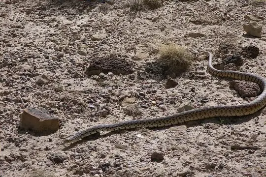
BullsnakePituophis catenifer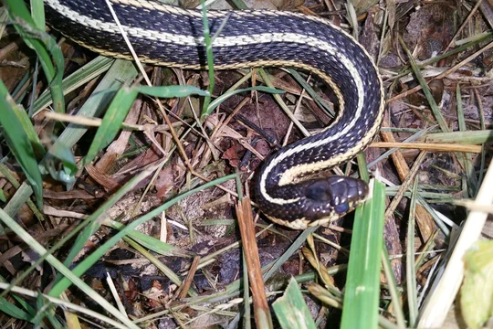
Butler's Garter SnakeThamnophis butleri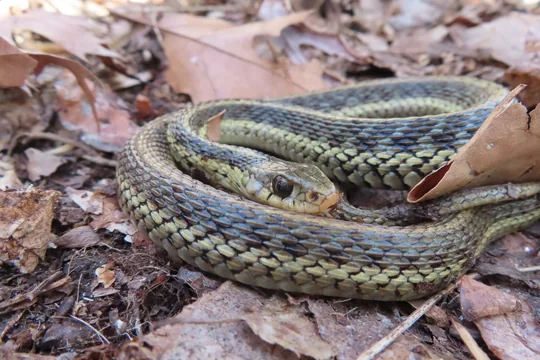
Common GartersnakeThamnophis sirtalis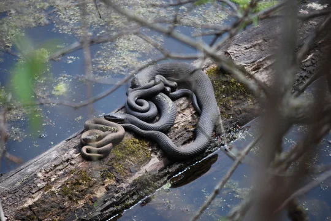
Common WatersnakeNerodia sipedon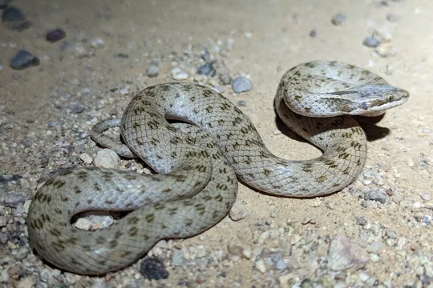
Desert NightsnakeHypsiglena chlorophaea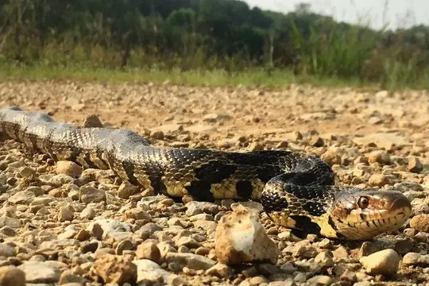
Eastern Fox SnakePantherophis vulpinus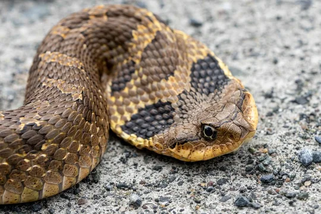
Eastern Hognose SnakeHeterodon platirhinos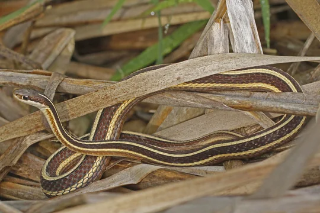
Eastern RibbonsnakeThamnophis saurita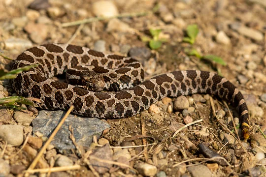
MassasaugaSistrurus catenatus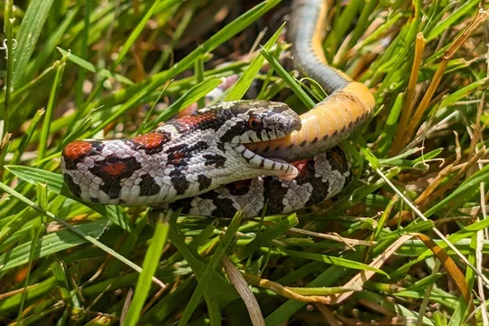
Milk SnakeLampropeltis triangulum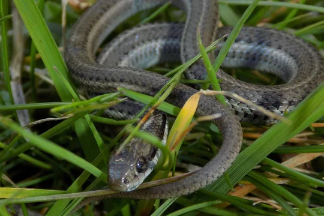
Northwestern Garter SnakeThamnophis ordinoides Plains Garter SnakeThamnophis radix
Plains Garter SnakeThamnophis radix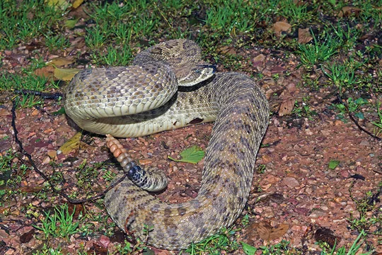
Prairie RattlesnakeCrotalus viridis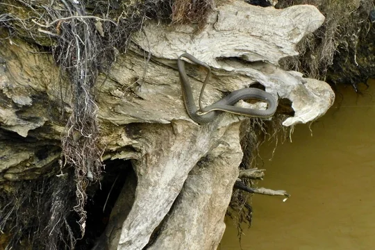
Queen SnakeRegina septemvittata RacerColuber constrictor
RacerColuber constrictor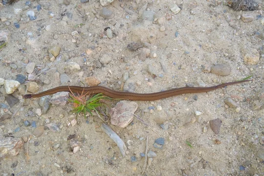
Redbelly SnakeStoreria occipitomaculata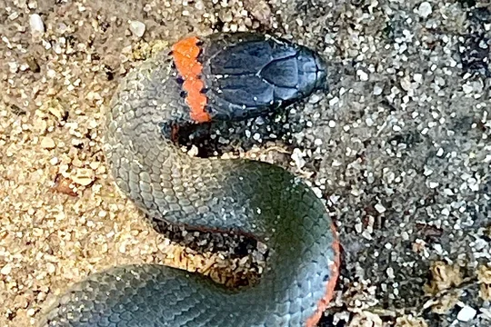
Ringneck SnakeDiadophis punctatus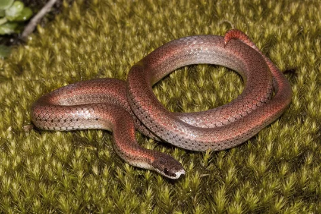
Sharptail SnakeContia tenuis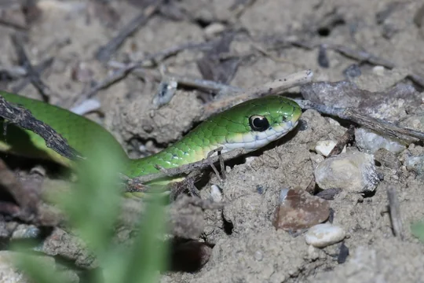
Smooth Green SnakeOpheodrys vernalis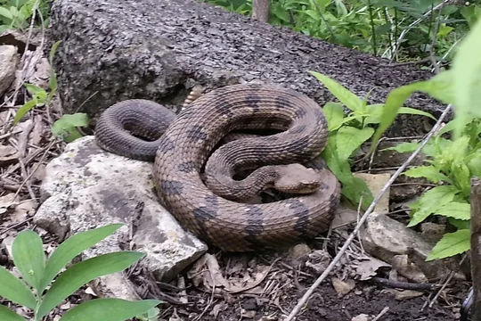
Timber RattlesnakeCrotalus horridus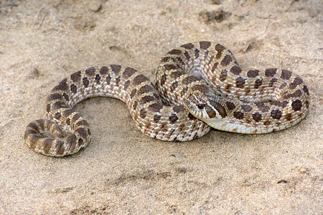
Western Hognose SnakeHeterodon nasicus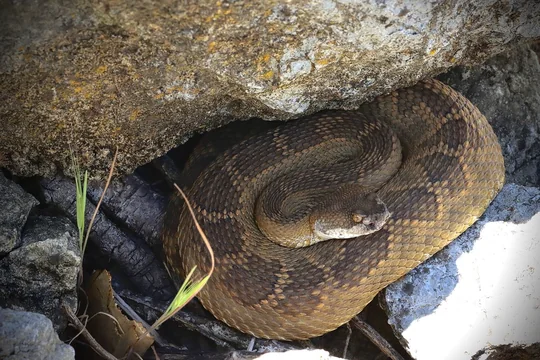
Western RattlesnakeCrotalus oreganus Western Terrestrial Garter SnakeThamnophis elegans
Western Terrestrial Garter SnakeThamnophis elegans
No snakes in Canada match.
Fossil snakes found here
This snake is known only from fossils found in Canada. It is not a living species and is not counted in this page’s totals. The geological age given is approximate: it comes from the rock layers the fossils were found in, and the dating and classification of fossil snakes are revised as new material is studied.
- Paracoluber storeri (late Miocene, about 7 million years ago)
How precisely they are recorded
Of the 24 living species recorded in Canada, 22 are recorded by province or territory in SnakeList’s data; 2 are recorded only for Canada as a whole, so the province or territory pages list them as possible rather than recorded. SnakeList records each species by province or territory, not by exact spot, so a species listed for a province may live in only part of it.
Provinces and territories
The provinces and territories where SnakeList records snakes, with how many living species are recorded in each. Each page has its species, venomous snakes, families, the species found only there, its cities and neighbours.
- Alberta 6 species
- British Columbia 8 species
- Manitoba 5 species
- New Brunswick 5 species
- Newfoundland and Labrador 1 species
- Nova Scotia 5 species
- Ontario 13 species
- Prince Edward Island 2 species
- Quebec 7 species
- Saskatchewan 9 species
No place matches that.
Cities
Its biggest cities, biggest first. SnakeList records snakes by province or territory, not by city, so each city page shows the species recorded in its province or territory and, separately, those only possible there - not species confirmed in the city.
- Toronto Ontario
- Montréal Quebec Province
- Calgary Alberta
- Ottawa Ontario
- Edmonton Alberta
- Mississauga Ontario
- North York Ontario
- Winnipeg Manitoba
- Vancouver British Columbia
- Scarborough Ontario
- Québec Quebec Province
- Hamilton Ontario
- Brampton Ontario
- Surrey British Columbia
- Laval Quebec Province
- Halifax Nova Scotia
- Etobicoke Ontario
- London Ontario
- Oshawa Ontario
- Okanagan British Columbia
- Victoria British Columbia
- Windsor Ontario
- Markham Ontario
- Gatineau Quebec Province
- Vaughan Ontario
No place matches that.